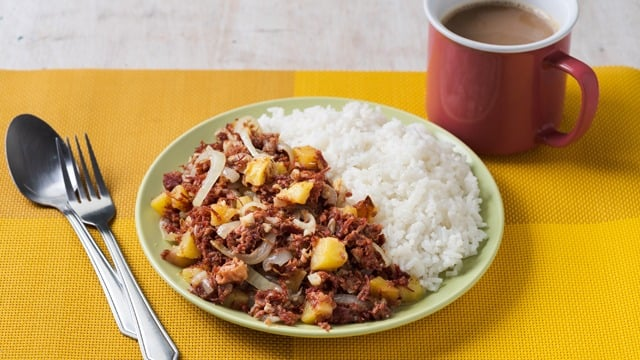

Omelette Recipe
Ingredients:
- 5 tablespoons Oil divided or as needed
- 2 medium Potatoes cubed
- 1 head Garlic minced
- 1 370-ml can corned beef
- 1 large white onion
- Salt to taste
Instruction:
- In a large pan over medium heat, preheat 3 tablespoons oil. Fry the potatoes. Set aside when cooked.
- Add 2 tablespoons oil to the frying pan. Add garlic and sauté until lightly browned.
- Add corned beef then return the cooked potatoes to the pan. Let it come to a simmer.
- Add onions and stir. Cook depending on how dry you want your corned beef. Season to taste with salt. Serve hot with rice.
